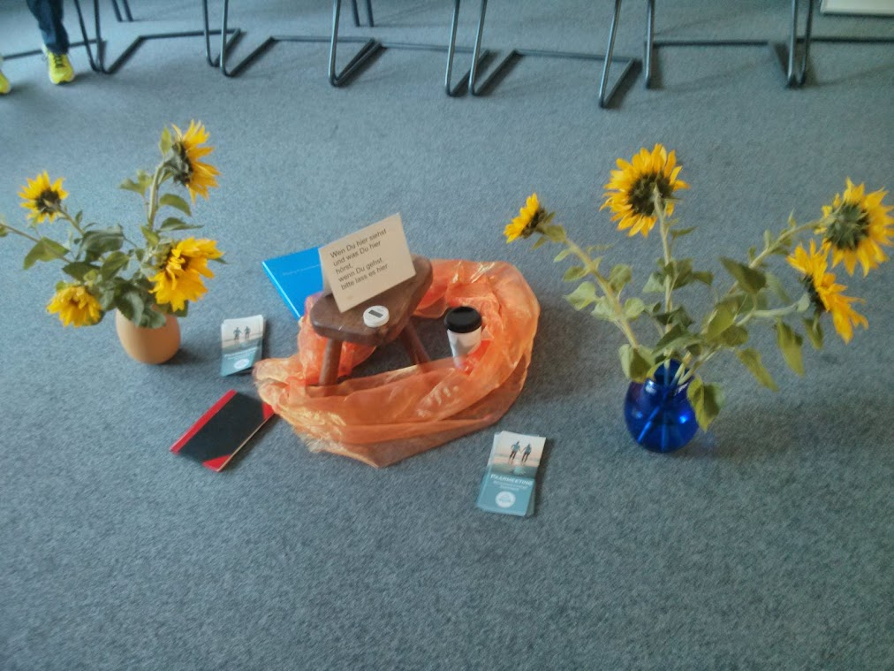

Das 2. Besinnungswochenende von RCA wird vom 5. bis 7. Juli 2019 wieder in Bad Driburg stattfinden. Flyer zum downloaden.
Das 12. RCA-DLT 2019 findet vom 18. bis 20. Oktober in Berlin (Kreuzberg) statt. Näheres in Kürze.
Besinnungswochenende von RCA in Venedig vom 20. bis 22. März 2020 (englischsprachig)
Das "Blaue Buch" von RCA ist in deutscher Übersetzung fertig und kann vom Verlag bestellt werden. Danke dem Überzetzungsteam
für die tolle Arbeit.
Zwei neu übersetzte Kapitel (1. und 4. Kapitel) des RCA-Schritte-Arbeitsbuches zum ausdrucken.
Ist RCA was für uns? Findet es mit dem neu übersetzten Beziehungsfragebogen heraus!
Das RCA-Video-Onlinemeeting findet jeweils am 3. Samstag im Monat 18-20 Uhr statt.
Zur Teilnahme am Meeting benötigt Ihr eine Webcam, eine hinreichend schnelle Internetverbindung ein Google-Account, sowie ein Google-Hangout-Plugin für Euren Webbrowser (Chrome oder Firefox)
Um eine Einladung zum Meeting zugeschickt zu bekommen, meldet Euch bitte zur Teilnahme hier an.
... kann als pdf vom der Literaturseite herunter geladen werden.
